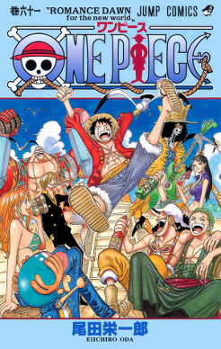
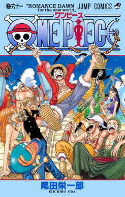
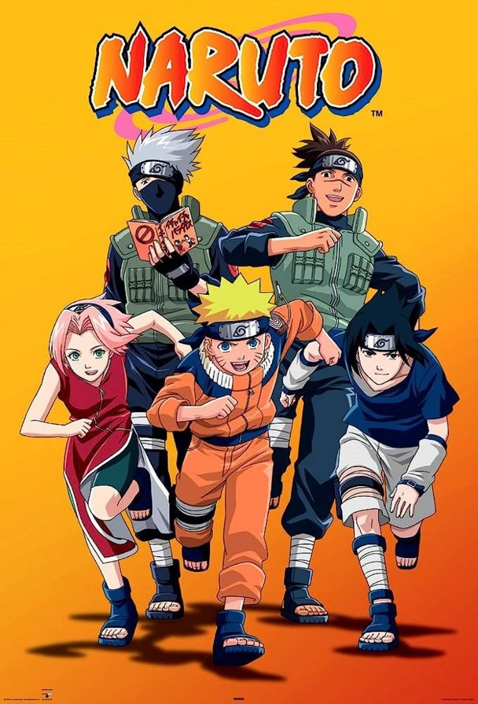
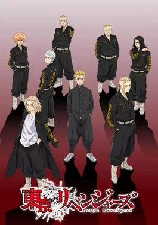
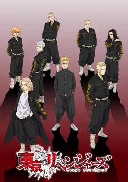

Released : 03 0ct 2020
Jujutsu Kaisen
★★★★☆
action
horror
supernatural
Idly indulging in baseless paranormal activities with the Occult Club, high schooler Yuuji Itadori
spends his days at either the clubroom or the hospital, where he visits his bedridden grandfather.
However, this leisurely lifestyle soon takes a turn for the strange when he unknowingly encounters
a cursed item. Triggering a chain of supernatural occurrences, Yuuji finds himself suddenly thrust
into the world of Curses—dreadful beings formed from human malice and negativity—after swallowing
the said item, revealed to be a finger belonging to the demon Sukuna Ryoumen, the "King of Curses.
Recommanded for you

 


Naruto Shippuden
Boruto
One Piece
Demon Slayer

 

Naruto
Death Note
Tokyo Revengers
Attack on Titan